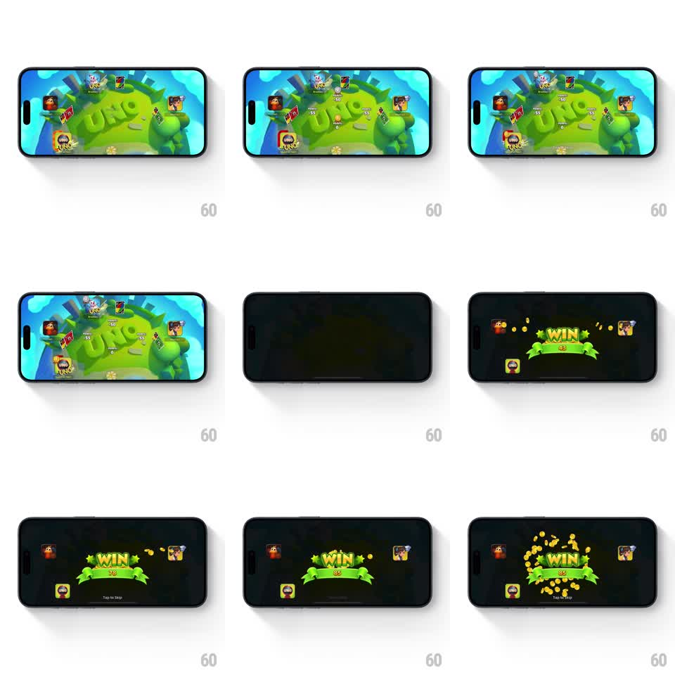

Media
Frame-by-frame

Rebuild this animation 1:1: UNO's win screen - the table dims, a green WIN banner slams in bouncing, the score ticks up rapidly, and gold coins rain in a burst around it.

Rebuild this animation 1:1: UNO's win screen - the table dims, a green WIN banner slams in bouncing, the score ticks up rapidly, and gold coins rain in a burst around it. ## Integration Integration: stack-agnostic spec - springs given as stiffness/damping, timed motions as duration + curve; map every value to your framework and animation library of choice. ## Scene Landscape game table with four player avatars; on win, the scene dims to near-black and the celebration layer takes over: WIN ribbon banner, score beneath it, coins, "Tap to Skip" hint. ## Motion spec Pattern: layered celebration, ~2.5s. - The table dims (300ms fade to 85% black) as the banner slams in from above (spring stiffness 280 damping 12, rotation settle +-4deg), letters "WIN" popping with 60ms stagger inside the ribbon. - The score starts at 0 and ticks upward fast (counts in ~800ms, ease-out) as coins begin to burst: two fountains left and right of the banner, each coin arcing out with gravity, spinning, fading after ~1.1s. - Coin bursts repeat in 3 volleys (~400ms apart); the final volley is the largest, ringing the whole banner. - Tap anywhere skips straight to the settled end state. ## Calibration - The banner's settle wobble must still be ringing when the score starts ticking - overlapping beats keep the energy up. - Coins are flat gold discs with a highlight edge; they spin on their vertical axis, not in-plane. ## Reduced motion Banner fades in, score sets instantly, one small coin shower without rotation. ## Don't miss - The losing avatars stay visible in the dim - the celebration plays over the table, not instead of it. - "Tap to Skip" fades in only after the first volley, so it never competes with the banner.